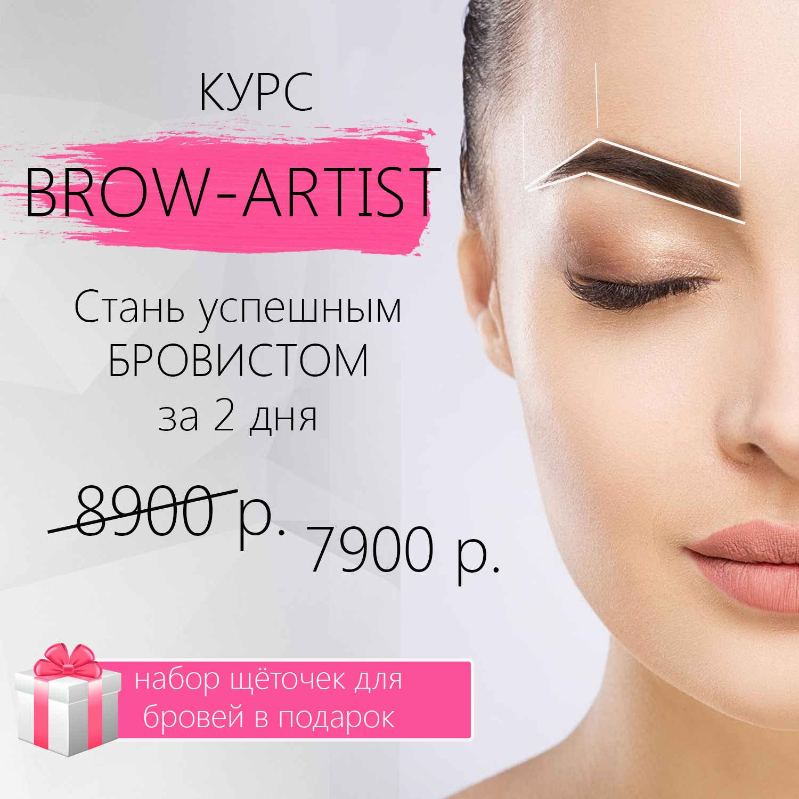
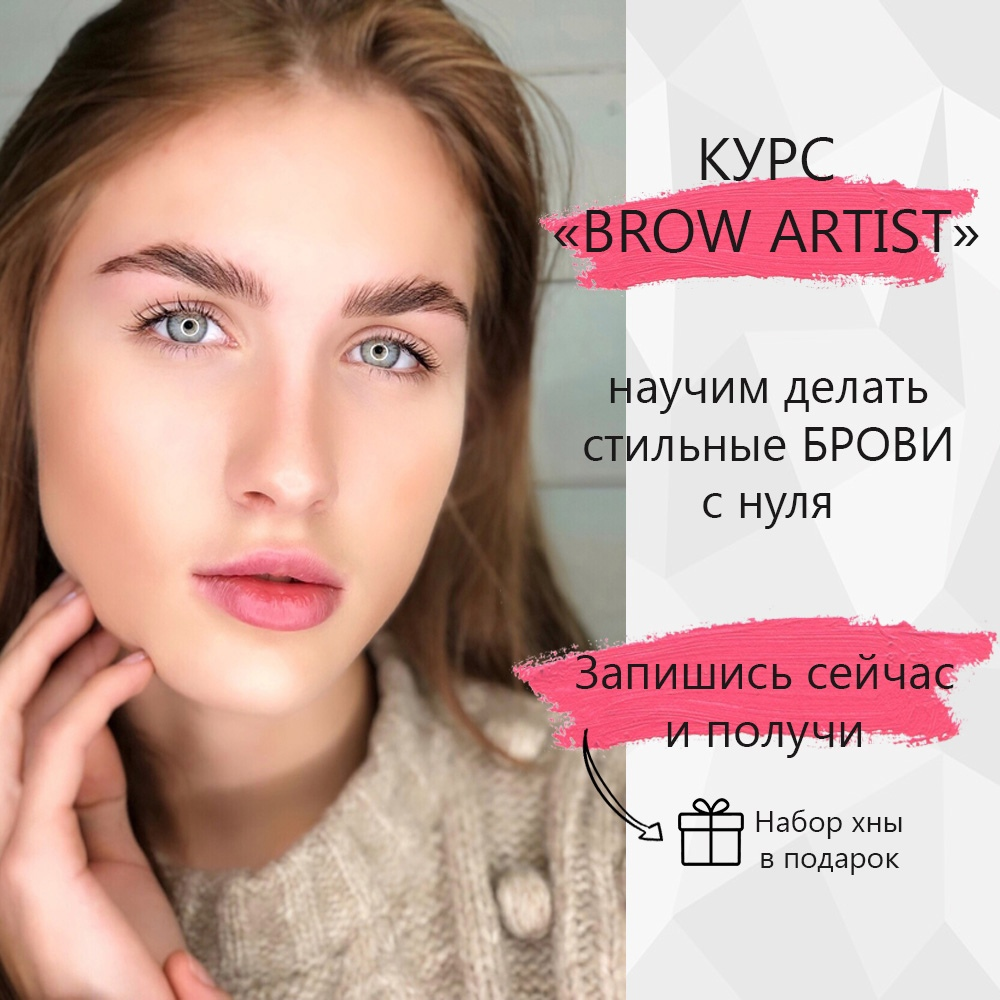

РЕКЛАМНАЯ КАМПАНИЯ ДЛЯ BEAUTY-ШКОЛЫ:
курсы "Мастер по наращиванию ресниц", "Бровист"
Цель - сгенерировать лиды для двух офлан-курсов школы
В качестве площадки использовалась социальная сеть "Вконтакте"
Было сделано:
- - Анализ целевой аудитории
- - Анализ конкурентов
- - Подготовка площадки - сообщества ВК
(подключены нужные виджеты, добавлены фотоальбомы с прошлых курсов и тд)
- - Создание контент-плана постов для наполнения сообщества и подготовки к акции
- - Создание креативов
- - Запуск таргетированной рекламы
Анализ целевой аудитрии
На этом этапе было выделено два основных портрета аудитории:
- Женщины в декрете, которые хотят иметь подработу, позволяющую совмещать с материнством
- Женщины, которые ищут себя, хотят заниматься любимым делом, хотят работать на себя
Для каждого портрета были прописаны основные боли, потребности и страхи.
Контент-план постов
Был составлен контент-план на 12 постов, которые бы подогревали пришедшую аудиторию.
Темы - полензно-информационные, информация о том как проходит обучение и где, отзывы от участников прошлых курсов,
работа со страхами и возражениями ЦА. Важно было учитывать уже имеющуюся стилистику повествования.
Примеры постов
Подготовка креативов
Было создано 10 вариантов креативов для запуска рекламы.
Тексты плюс банеры, тесты плюс видео для каждого типа ЦА.
Также была подобрана аудитория для трансляции объявлений.
Примеры креативов



Результаты компании
После запуска тестов, были сделаны коррективы
и выбраны 5 вариантов объявлений, на которые и делался
запуск основного рекламного бюджета.
В целом достигнута цель по минимизации стоимости за переход.
Средняя цена перехода обошлась в 10-15 руб
Скрины рекламного кабинета
Итоги:
Всего за рекламную компанию (1 месяц) было получено 53 лида.
Стоимость 1 лида - 230 руб.
Увеличение подписчиков + 88 чел